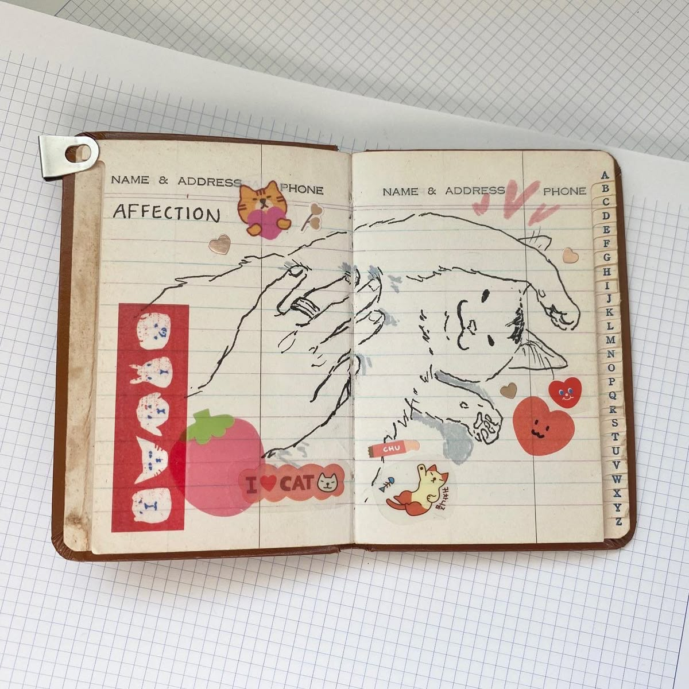

Monthly Recap idea that would contain fun memories and artifacts. From Bronte P.

A journal page that mixes artwork and stickers related to the subject: Cats!Catalog your months with photobooth photos and artifacts like metro cards and tea packets.Tasty meal? Write it down and add some labels!If nature speaks to you, go outside to journal what you see. Don't forget your headhodge stickers.Feeling retro? Find inspiration from different decades to fill a colorful journal spread.So many styles to choose from. Try cutesy!Feeling more artistics? A journal can double as a sketchbook - there are no limits!